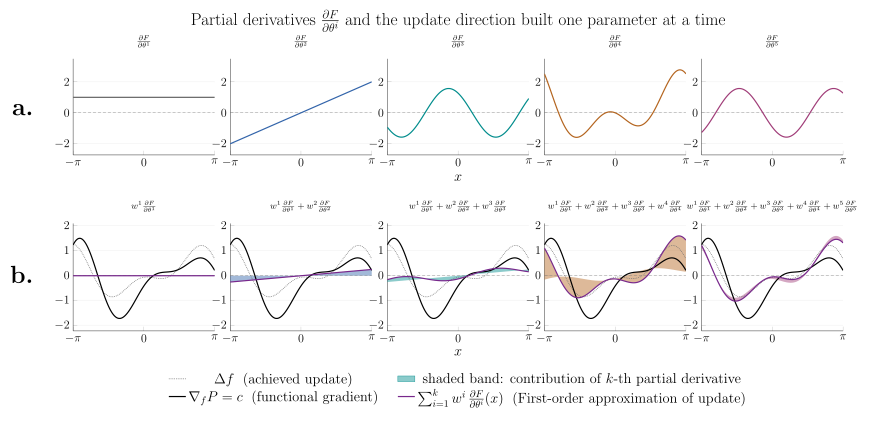
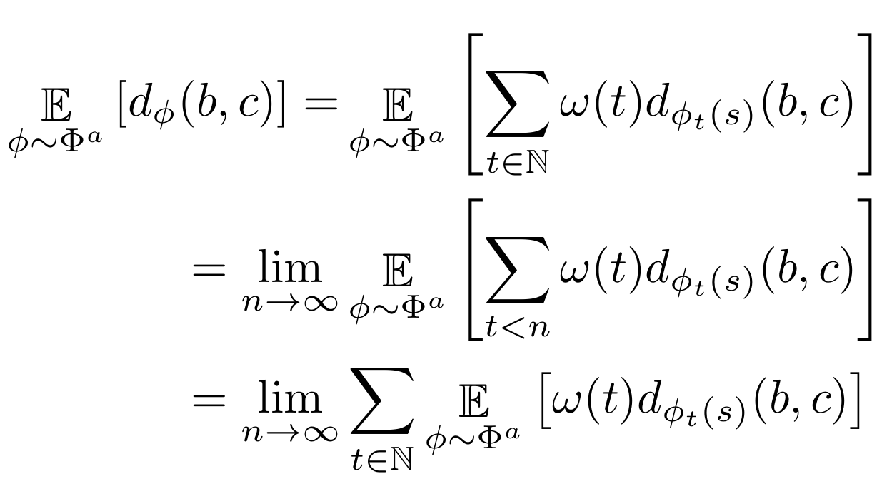
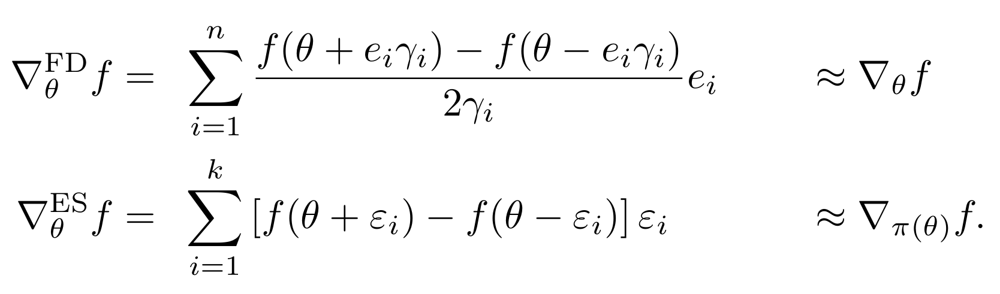
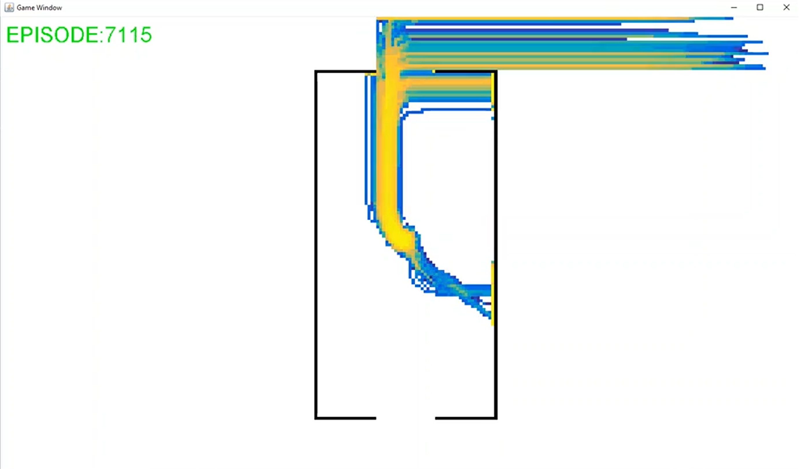

Learning & Remembering
Separating learning into a learning rule and a memory rule, and showing that the alignment between the two governs how much an agent can improve.

Separating learning into a learning rule and a memory rule, and showing that the alignment between the two governs how much an agent can improve.

Combatting plasticity loss by switching between an active and a passive network, allowing full resets without a performance drop.

A descriptive topology on the set of agents in a decision process, providing a new footing for exploration in infinite problems.

A proof that Evolution Strategies and finite differences gradient approximators converge as dimensionality grows.

Combining the ES/FD result with agent-space Novelty Search into a fully parallelizable RL method.